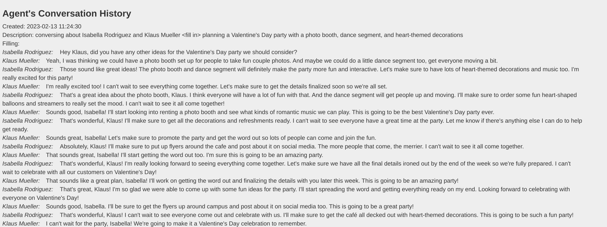

ATLAS undergraduate project
Agent Simulation: From Mistral 7B Drift to Mixtral 8x7B Stability
Starting from Stanford's generative-agents work, I built a small-town agent simulation to test how open LLMs behave in a constrained planning loop. This case study compares Mistral 7B, Mixtral 8x7B, and a GPT reference run, then documents the guardrails needed to keep actions valid.
1) Inspiration
Stanford's Smallville project gave me both the conceptual frame and a code setting for running agents with memory, retrieval, planning, and action inside a simulated town. I adapted that setting for a smaller experiment with weaker open models: first testing whether Mistral 7B could keep characters coherent under hard room and schedule constraints, then comparing it with Mixtral 8x7B and changing persona descriptions to see whether behavior changed.
Reference Stanford HAI: Computational agents exhibit believable humanlike behavior
The simulation loop asks each character to perceive the environment, store relevant memories, retrieve context, and choose the next action. My focus was not to build a polished game, but to study where open models drift: invalid rooms, format errors, long-context noise, and persona inconsistency.

2) Demo Runs
Three runs use the same simulation objective: a GPT reference, a Mistral 7B baseline, and a Mixtral 8x7B run after prompt and validation changes.
Run guide
- Run A GPT reference behavior
- Run B Mistral 7B baseline drift
- Run C Mixtral 8x7B improved after prompt engineering
What this demo sets up: the next step is the basic prompt-to-action mechanism, then the same mechanism is compared under Mistral 7B failure and Mixtral 8x7B improvement.
Note: these are qualitative demos, not benchmark metrics. `.mov` playback may vary by browser codec.
3) Basic Mechanism: Prompt to Action
To read the demos, start with the basic loop: the model builds each character's daily plan from the background information, then chooses the next valid action from the current situation. The simulator turns that choice into movement. When the answer drifts outside the allowed options, the character starts wandering, repeating, or getting stuck.
Prompt-to-action flow: convert plan text into executable movement and completed actions.
- Plan actions ahead: prepare action blocks before runtime.
- Prompt at the scheduled time: send the model the current requirement, memory context, and allowed action options.
- Parse the answer: keep the response close to a single executable location or action choice.
- Apply answer in code: runtime moves the character to the selected location.
- Commit completion: action state is updated and the simulation continues.


Constraint drift: the same mechanism breaks more often with Mistral 7B and becomes more usable with Mixtral 8x7B plus prompt engineering.

4) Failure Cases
Main failures came from Mistral 7B under dense prompts: invalid outputs, instruction drift, and communication loops.
Constrained room selection: expected answer vs drift
Correct case (expected format):
Jane Anderson is going to Jane Anderson's house that has the following areas: {kitchen, bedroom, bathroom}
* Stay in the current area if the activity can be done there.
* Never go into other people's rooms unless necessary.
For cooking, Jane Anderson should go to the following area in Jane Anderson's house:
Answer: {kitchen}Prompt that triggered drift:
Isabella Rodriguez is going to Isabella Rodriguez's apartment that has the following areas: {main room}
* Stay in the current area if the activity can be done there.
* NEVER go into other people's rooms unless necessary.
Isabella Rodriguez is sleeping. For sleeping, Isabella Rodriguez should go to the following area in Isabella Rodriguez's apartment (MUST pick one of {main room}):
Answer: {Observed drift:
main_room }
main room }
options: [main_room]
response: main_room
explanation: ...
main room; bedroom}
Issue: the model selected the correct room, but kept generating extra formats,
narrative text, and invalid alternatives instead of stopping at {main room}.Failure type: format drift and instruction-following breakdown.
Cause: the model continued generating narrative text instead of honoring the single-choice output contract.
Fix: enforce the `Answer: {option}` schema, reject invalid outputs, retry with compressed context, and place rules before narrative details.
Long communication drift: multi-turn conversations become repetitive
Failure type: long-context communication drift.
Evidence: as dialogue history grows, responses become repetitive and lose action relevance.
Pattern
Repeated agreement language dominates later turns.
Risk
Conversation text starts overriding action-selection constraints.
Impact
Characters keep socializing, but task progress stalls.

Cause: memory and conversation context became too long, reducing the salience of hard constraints.
Fix: trim context windows, prioritize recent task state, and cap conversational carry-over.
5) Persona Stress Test
I changed character personas while keeping the same simulation loop, then checked whether the new goals stayed stable after social dialogue.
Question
Do persona edits change planning behavior?
Method
Run the same loop with cooperative and stress-test personas.
Finding
New goals appear in planning, but conversation can weaken them.

Baseline
Klaus Mueller
Sociology student researcher
- Tendency
- Kind, inquisitive, passionate
- Current focus
- Writing a gentrification paper with a stable routine

Stress-test
Adam Smith
Opportunistic planner
- Tendency
- Self-interested, evasive, opportunistic
- Current focus
- Does a disruptive goal persist through normal conversation?
Planning detail can be introduced, but friendly dialogue may pull the agent back toward cooperative behavior.

Baseline
Isabella Rodriguez
Cafe owner and host
- Tendency
- Friendly, outgoing, hospitable
- Current focus
- Planning and coordinating a community party event

Stress-test
Abigail Chen
Disruptive organizer
- Tendency
- Competitive, impulsive, conflict-seeking
- Current focus
- Does the simulation preserve disruptive intent?
Persona changes appear in plans, but action follow-through still needs explicit goal-memory checks.
Planning Probe
What I Checked
- Whether planning details remain consistent across turns.
- Whether the persona keeps its goal under social pressure.
- Whether dialogue redirects the agent away from the original plan.
Observed Result
Goal Drift After Social Dialogue
- 1
Goal set: the agent starts with a clear non-cooperative objective.
- 2
Dialogue starts: another character opens a friendly conversation.
- 3
Goal drifts: the agent responds politely and drops the original objective.
Takeaway: persona prompts alone are not enough; goal memory and consistency checks need to be part of the loop.
6) Stabilization
Strict Output Contract
Use a single-answer format (`Answer: {room}`) to prevent free-form continuation.
Validator + Retry Policy
Reject invalid room choices or malformed outputs, then reprompt with compressed context.
Prompt Prioritization
Put rules first, allowed options second, and scenario narrative last.
Model Routing
Use Mistral 7B and Mixtral 8x7B for the main comparison, with optional fallback routes for difficult cases.
Rate Limiting / Throttling
Limit retry frequency so failure recovery does not destabilize the simulator loop.
Implementation note: throttle windows and retry caps are necessary; otherwise recovery logic can destabilize the simulator itself.